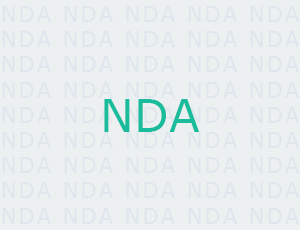

Электронный документооборот подразделения УИТиС
АО "Саянскхимпласт"
2017-2019
Подразделение УИТиС состоит из трёх отделов,
если кратко это - программисты, отдел поддержки и связисты.
После предпроектного анализа и написания ТЗ, описал бизнес-модели в ноциях IDEF0 и BPMN. Связку
NetCat и Ext JS выбрал исходя из того что она использовалась в 90% web-проектов на предприятии и
в связи с этим имеются специалисты в штате, которые способны вносить правки во время моего отпуска и
в случае увольнения.
Система разработана и внедрена, и позволяет:
-вести учёт входящих документов (приказы, служебные записки и пр.);
-вести учёт исходящих документов;
-связывать документы и формировать новые на основе существующих;
-распределять документы в другие системы;
-назначать работы, исполнителей, ответственных и дополнительно привлекаемых специалистов по документу;
-составлять план работ на месяц/год;
-составлять отчёт по работам на месяц/год;
-формировать статистику по выполнению работ;
-информировать заказчика о выполнении работ.
Реализована сложная система статусов, статус имеют: сам документ, работы по документу,
работы по документу у каждого исполнителя, работы по документу у каждого ответсвенного, мероприятия
по работам и т.д.
Формирование плана происходит в несколько этапов, в котором участвуют как сам
исполнитель и ответственный за исполнение, так и начальник отдела. Каждая работа оценивается
в человекочасах.
При формировании отчётов данные о количестве рабочих часов каждого специалиста
берётся из БОСС-Кадровика. После чего считается выполнение плана в процентах,
учитывая процент выполнения каждой планируемой работы, работ вне плана, запросов
на сопровождение. В итоге процент уходит в KPI-систему.
Авторизация в системе сквозная с использованием Active Directory. Все данные о заказчиках
берётся из БОСС-Кадровика. Планы, отчёты, сформированные акты, служебные записки и
приказы можно выгрузить в формате Excel, PDF.
Раздел на внешнем сайте по продаже неликвидных товарно-материальных ценностей
АО "Саянскхимпласт"
2019
---
Учёт численности персонала для ГОиЧС
АО "Саянскхимпласт"
2018
---
Личный кабинет технологического присоединения
АО "Саянскхимпласт"
2017
---
Система оценки подразделений
АО "Саянскхимпласт"
2017
---
Система учёта заявок в службу КОИР
АО "Саянскхимпласт"
2016
---
Система непрерывного совершенствования (Кайдзен)
АО "Саянскхимпласт"
2016
---
АИС учёта пациентов и их анализов
ОГБУЗ "Саянская городская больница"
2019
Клиент настоял на использовании NetCat.
Разработанная система позволяет:
-вести учёт пациентов (прикреплённых к поликлинике, иногородних);
-вести учёт анализов (маммографии, УЗИ, цитологии, флюорографии, PSA и CA 125);
-контролировать прохождение анализов (например один раз в год флюорографию);
-составлять отчёты (годовые, ежеквартальные, суммарные, по результатам) и выгружать их в формате Excel.
Написана интеграция со сторонней системой прикрепления пациентов к поликлинике CLINIC, реализована возможность импорта пациентов из CSV, XML, DBF.
Так же у каждого врача реализовано своё ФРМ (Терапевт, онколог, зав. поликлиникой и т.д.), терапевты могут работать только с пациентами своего участка.